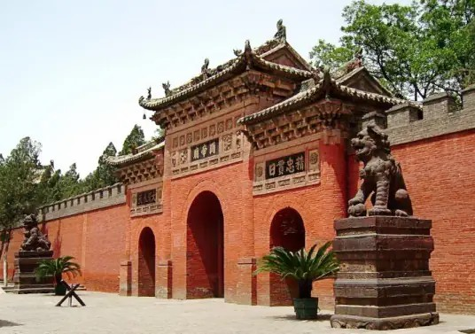

关帝庙 |
返回主页 |  | |
| 运城关公故里文化旅游景区，分为“解州关帝祖庙、常平关帝家庙、常平关帝祖陵”三关文物旅游景区。 解州关帝祖庙，位于山西省运城市盐湖区解州镇；常平关帝家庙，位于山西省运城市盐湖区解州镇常平村；关帝祖陵，位于山西省运城市盐湖区解州镇常平村南方的中条山石磐沟内。 解州关帝祖庙创建于陈、隋（557—618年）时期；常平关帝庙始建于隋朝，至金代始成庙宇。 城关公故里文化旅游景区已初步形成了“解州关帝祖庙、常平关帝家庙、常平关帝祖陵”三关文物旅游景区。 解州关帝祖庙南临条山，北依银湖，总占地面积达26万平方米；常平关帝家庙距解州祖庙8千米，总占地面积达1.5万平方米。南依中条山，北临古盐池；关帝祖陵景区占地3000亩。 2013年，山西解州关帝祖庙被国务院台办授予“海峡两岸交流基地”。 2015年6月，运城关公故里文化旅游景区被授予“中国侨联国际文化交流基地”。 2021年11月，解州关帝祖庙被评为第一批国家级文明旅游示范单位。 |
|||